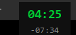
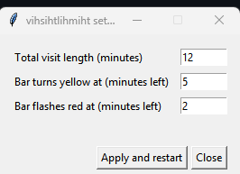

“You have 15 minutes—to establish rapport, do the med rec, examine the patient, listen to your preceptor’s stories, and place your orders. Here, take this.”
At most 0.5 mm tall — one or two pixels. It reserves its own strip of the screen, so maximized windows sit below it instead of hiding it.
green while time is plenty
yellow at 5 minutes left
flashing red at 2 minutes, and in overtime
A small always-on-top readout shows elapsed time and time remaining — or overtime in red. Drag it anywhere; right-click hides it.
Right-click the bar to set the visit length and the yellow/red thresholds. Settings persist between runs.


| Action | Effect |
|---|---|
| Right-click the bar | Open settings |
| Triple-click the bar | Close (single/double clicks do nothing — no accidental exits) |
Esc | Close |
| Drag the stopwatch | Move it |
| Right-click the stopwatch | Hide it |